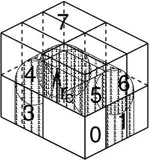
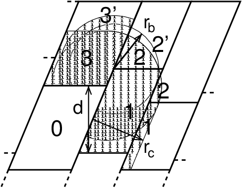
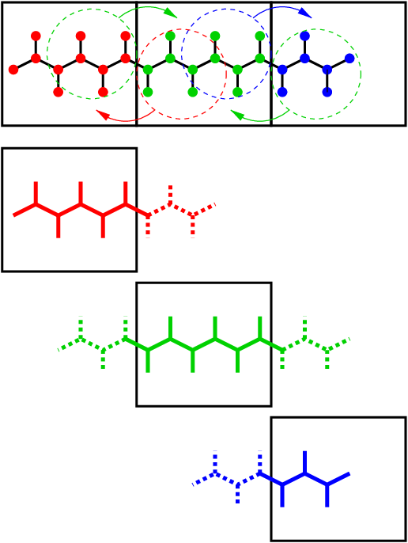
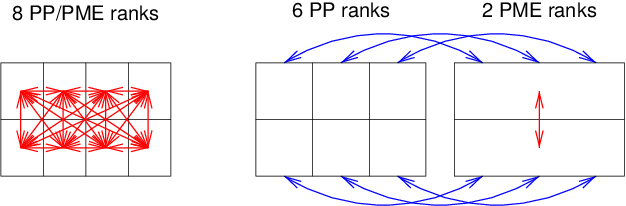
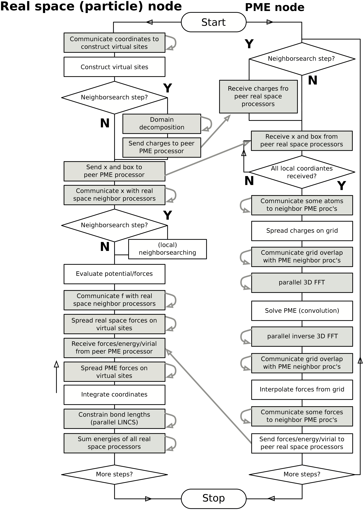

Parallelization¶
The CPU time required for a simulation can be reduced by running the simulation in parallel over more than one core. Ideally, one would want to have linear scaling: running on \(N\) cores makes the simulation \(N\) times faster. In practice this can only be achieved for a small number of cores. The scaling will depend a lot on the algorithms used. Also, different algorithms can have different restrictions on the interaction ranges between atoms.
Domain decomposition¶
Since most interactions in molecular simulations are local, domain decomposition is a natural way to decompose the system. In domain decomposition, a spatial domain is assigned to each rank, which will then integrate the equations of motion for the particles that currently reside in its local domain. With domain decomposition, there are two choices that have to be made: the division of the unit cell into domains and the assignment of the forces to domains. Most molecular simulation packages use the half-shell method for assigning the forces. But there are two methods that always require less communication: the eighth shell 69 and the midpoint 70 method. GROMACS currently uses the eighth shell method, but for certain systems or hardware architectures it might be advantageous to use the midpoint method. Therefore, we might implement the midpoint method in the future. Most of the details of the domain decomposition can be found in the GROMACS 4 paper 5.
Coordinate and force communication¶
In the most general case of a triclinic unit cell, the space in divided with a 1-, 2-, or 3-D grid in parallelepipeds that we call domain decomposition cells. Each cell is assigned to a particle-particle rank. The system is partitioned over the ranks at the beginning of each MD step in which neighbor searching is performed. The minimum unit of partitioning can be an atom, or a charge group with the (deprecated) group cut-off scheme or an update group. An update group is a group of atoms that has dependencies during update, which occurs when using constraints and/or virtual sites. Thus different update groups can be updated independently. Currently update groups can only be used with at most two sequential constraints, which is the case when only constraining bonds involving hydrogen atoms. The advantages of update groups are that no communication is required in the update and that this allows updating part of the system while computing forces for other parts. Atom groups are assigned to the cell where their center of geometry resides. Before the forces can be calculated, the coordinates from some neighboring cells need to be communicated, and after the forces are calculated, the forces need to be communicated in the other direction. The communication and force assignment is based on zones that can cover one or multiple cells. An example of a zone setup is shown in Fig. 11.


Fig. 11 A non-staggered domain decomposition grid of 3\(\times\)2\(\times\)2 cells. Coordinates in zones 1 to 7 are communicated to the corner cell that has its home particles in zone 0. \(r_c\) is the cut-off radius.¶
The coordinates are communicated by moving data along the “negative” direction in \(x\), \(y\) or \(z\) to the next neighbor. This can be done in one or multiple pulses. In Fig. 11 two pulses in \(x\) are required, then one in \(y\) and then one in \(z\). The forces are communicated by reversing this procedure. See the GROMACS 4 paper 5 for details on determining which non-bonded and bonded forces should be calculated on which rank.
Dynamic load balancing¶
When different ranks have a different computational load (load imbalance), all ranks will have to wait for the one that takes the most time. One would like to avoid such a situation. Load imbalance can occur due to four reasons:
inhomogeneous particle distribution
inhomogeneous interaction cost distribution (charged/uncharged, water/non-water due to GROMACS water innerloops)
statistical fluctuation (only with small particle numbers)
differences in communication time, due to network topology and/or other jobs on the machine interfering with our communication
So we need a dynamic load balancing algorithm where the volume of each domain decomposition cell can be adjusted independently. To achieve this, the 2- or 3-D domain decomposition grids need to be staggered. Fig. 12 shows the most general case in 2-D. Due to the staggering, one might require two distance checks for deciding if an update group needs to be communicated: a non-bonded distance and a bonded distance check.


Fig. 12 The zones to communicate to the rank of zone 0, see the text for details. \(r_c\) and \(r_b\) are the non-bonded and bonded cut-off radii respectively, \(d\) is an example of a distance between following, staggered boundaries of cells.¶
By default, mdrun automatically turns on the dynamic load balancing
during a simulation when the total performance loss due to the force
calculation imbalance is 2% or more. Note that the reported force
load imbalance numbers might be higher, since the force calculation is
only part of work that needs to be done during an integration step. The
load imbalance is reported in the log file at log output steps and when
the -v option is used also on screen. The average load imbalance and the
total performance loss due to load imbalance are reported at the end of
the log file.
There is one important parameter for the dynamic load balancing, which
is the minimum allowed scaling. By default, each dimension of the domain
decomposition cell can scale down by at least a factor of 0.8. For 3-D
domain decomposition this allows cells to change their volume by about a
factor of 0.5, which should allow for compensation of a load imbalance
of 100%. The minimum allowed scaling can be changed with the
-dds option of mdrun.
The load imbalance is measured by timing a single region of the MD step on each MPI rank. This region can not include MPI communication, as timing of MPI calls does not allow separating wait due to imbalance from actual communication. The domain volumes are then scaled, with under-relaxation, inversely proportional with the measured time. This procedure will decrease the load imbalance when the change in load in the measured region correlates with the change in domain volume and the load outside the measured region does not depend strongly on the domain volume. In CPU-only simulations, the load is measured between the coordinate and the force communication. In simulations with non-bonded work on GPUs, we overlap communication and work on the CPU with calculation on the GPU. Therefore we measure from the last communication before the force calculation to when the CPU or GPU is finished, whichever is last. When not using PME ranks, we subtract the time in PME from the CPU time, as this includes MPI calls and the PME load is independent of domain size. This generally works well, unless the non-bonded load is low and there is imbalance in the bonded interactions. Then two issues can arise. Dynamic load balancing can increase the imbalance in update and constraints and with PME the coordinate and force redistribution time can go up significantly. Although dynamic load balancing can significantly improve performance in cases where there is imbalance in the bonded interactions on the CPU, there are many situations in which some domains continue decreasing in size and the load imbalance increases and/or PME coordinate and force redistribution cost increases significantly. As of version 2016.1, mdrun disables the dynamic load balancing when measurement indicates that it deteriorates performance. This means that in most cases the user will get good performance with the default, automated dynamic load balancing setting.
Constraints in parallel¶
Since with domain decomposition parts of molecules can reside on
different ranks, bond constraints can cross cell boundaries.
This will not happen in GROMACS when update groups are used, which happens
when only bonds involving hydrogens are constrained. Then atoms connected
by constraints are assigned to the same domain. But without update groups
a parallel constraint algorithm is required. GROMACS uses the P-LINCS
algorithm 50, which is the parallel version of the LINCS
algorithm 49 (see The LINCS algorithm). The P-LINCS procedure
is illustrated in Fig. 13. When molecules cross the cell
boundaries, atoms in such molecules up to (lincs_order + 1) bonds away
are communicated over the cell boundaries. Then, the normal LINCS
algorithm can be applied to the local bonds plus the communicated ones.
After this procedure, the local bonds are correctly constrained, even
though the extra communicated ones are not. One coordinate communication
step is required for the initial LINCS step and one for each iteration.
Forces do not need to be communicated.


Fig. 13 Example of the parallel setup of P-LINCS with one molecule split over three domain decomposition cells, using a matrix expansion order of 3. The top part shows which atom coordinates need to be communicated to which cells. The bottom parts show the local constraints (solid) and the non-local constraints (dashed) for each of the three cells.¶
Interaction ranges¶
Domain decomposition takes advantage of the locality of interactions. This means that there will be limitations on the range of interactions. By default, mdrun tries to find the optimal balance between interaction range and efficiency. But it can happen that a simulation stops with an error message about missing interactions, or that a simulation might run slightly faster with shorter interaction ranges. A list of interaction ranges and their default values is given in Table 7
interaction |
range |
option |
default |
|---|---|---|---|
non-bonded |
\(r_c\)=max(\(r_{\mathrm{list}}\),\(r_{\mathrm{VdW}}\),\(r_{\mathrm{Coul}}\)) |
mdp file |
|
two-body bonded |
max(\(r_{\mathrm{mb}}\),\(r_c\)) |
mdrun |
starting conf. + 10% |
multi-body bonded |
\(r_{\mathrm{mb}}\) |
mdrun |
starting conf. + 10% |
constraints |
\(r_{\mathrm{con}}\) |
mdrun |
est. from bond lengths |
virtual sites |
\(r_{\mathrm{con}}\) |
mdrun |
0 |
In most cases the defaults of mdrun should not cause the simulation to
stop with an error message of missing interactions. The range for the
bonded interactions is determined from the distance between bonded
update groups in the starting configuration, with 10% added for
headroom. For the constraints, the value of \(r_{\mathrm{con}}\) is
determined by taking the maximum distance that (lincs_order + 1) bonds
can cover when they all connect at angles of 120 degrees. The actual
constraint communication is not limited by \(r_{\mathrm{con}}\), but
by the minimum cell size \(L_C\), which has the following lower
limit:
Without dynamic load balancing the system is actually allowed to scale beyond this limit when pressure scaling is used. Note that for triclinic boxes, \(L_C\) is not simply the box diagonal component divided by the number of cells in that direction, rather it is the shortest distance between the triclinic cells borders. For rhombic dodecahedra this is a factor of \(\sqrt{3/2}\) shorter along \(x\) and \(y\).
When \(r_{\mathrm{mb}} > r_c\), mdrun employs a smart algorithm to reduce the communication. Simply communicating all update groups within \(r_{\mathrm{mb}}\) would increase the amount of communication enormously. Therefore only update groups that are connected by bonded interactions to update groups which are not locally present are communicated. This leads to little extra communication, but also to a slightly increased cost for the domain decomposition setup. In some cases, e.g. coarse-grained simulations with a very short cut-off, one might want to set \(r_{\mathrm{mb}}\) by hand to reduce this cost.
Multiple-Program, Multiple-Data PME parallelization¶
Electrostatics interactions are long-range, therefore special algorithms are used to avoid summation over many atom pairs. In GROMACS this is usually PME (sec. PME). Since with PME all particles interact with each other, global communication is required. This will usually be the limiting factor for scaling with domain decomposition. To reduce the effect of this problem, we have come up with a Multiple-Program, Multiple-Data approach 5. Here, some ranks are selected to do only the PME mesh calculation, while the other ranks, called particle-particle (PP) ranks, do all the rest of the work. For rectangular boxes the optimal PP to PME rank ratio is usually 3:1, for rhombic dodecahedra usually 2:1. When the number of PME ranks is reduced by a factor of 4, the number of communication calls is reduced by about a factor of 16. Or put differently, we can now scale to 4 times more ranks. In addition, for modern 4 or 8 core machines in a network, the effective network bandwidth for PME is quadrupled, since only a quarter of the cores will be using the network connection on each machine during the PME calculations.


Fig. 14 Example of 8 ranks without (left) and with (right) MPMD. The PME communication (red arrows) is much higher on the left than on the right. For MPMD additional PP - PME coordinate and force communication (blue arrows) is required, but the total communication complexity is lower.¶
mdrun will by default interleave the PP and PME ranks.
If the ranks are not number consecutively inside the machines, one might
want to use mdrun -ddorder pp_pme. For machines with a
real 3-D torus and proper communication software that assigns the ranks
accordingly one should use mdrun -ddorder cartesian.
To optimize the performance one should usually set up the cut-offs and
the PME grid such that the PME load is 25 to 33% of the total
calculation load. grompp will print an estimate for this load at the end
and also mdrun calculates the same estimate to determine the optimal
number of PME ranks to use. For high parallelization it might be
worthwhile to optimize the PME load with the mdp settings and/or the
number of PME ranks with the -npme option of mdrun. For changing the
electrostatics settings it is useful to know the accuracy of the
electrostatics remains nearly constant when the Coulomb cut-off and the
PME grid spacing are scaled by the same factor. Note that it is
usually better to overestimate than to underestimate the number of PME
ranks, since the number of PME ranks is smaller than the number of PP
ranks, which leads to less total waiting time.
The PME domain decomposition can be 1-D or 2-D along the \(x\) and/or \(y\) axis. 2-D decomposition is also known as pencil decomposition because of the shape of the domains at high parallelization. 1-D decomposition along the \(y\) axis can only be used when the PP decomposition has only 1 domain along \(x\). 2-D PME decomposition has to have the number of domains along \(x\) equal to the number of the PP decomposition. mdrun automatically chooses 1-D or 2-D PME decomposition (when possible with the total given number of ranks), based on the minimum amount of communication for the coordinate redistribution in PME plus the communication for the grid overlap and transposes. To avoid superfluous communication of coordinates and forces between the PP and PME ranks, the number of DD cells in the \(x\) direction should ideally be the same or a multiple of the number of PME ranks. By default, mdrun takes care of this issue.
Domain decomposition flow chart¶
In Fig. 15 a flow chart is shown for domain decomposition with all possible communication for different algorithms. For simpler simulations, the same flow chart applies, without the algorithms and communication for the algorithms that are not used.


Fig. 15 Flow chart showing the algorithms and communication (arrows) for a standard MD simulation with virtual sites, constraints and separate PME-mesh ranks.¶